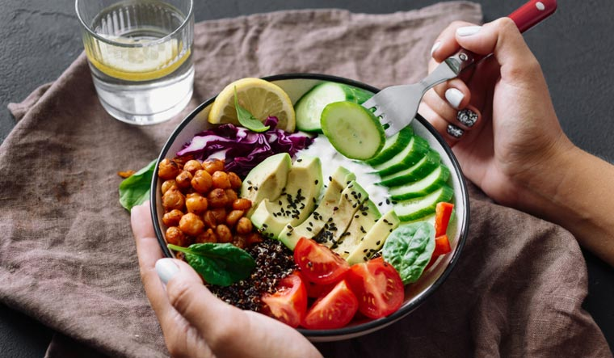

No matter how you slice and dice it, food and love are inextricably tied. In fact, YourTango polled more than a thousand hungry readers for our Breakfast, Love and Dinner survey, and 75% agreed that preparing food for someone is a significant act of love. Whoa. If that doesn't get you hungry for some sweet, sweet romantic dinners, I don't know what will. Actually, food and love quotes might do the trick. We all love food quotes because they're just so relatable. You've probably heard Virginia Woolf's popular quote "One cannot think well, love well, sleep well, if one has not dined well," but other notable food-loving people have also poetically described the bond between food and love.